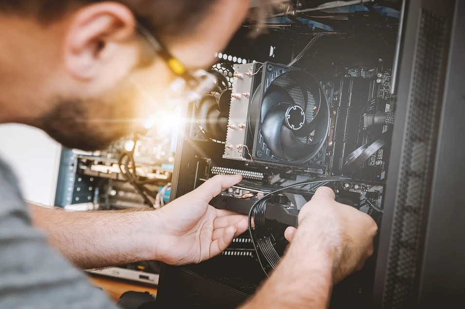

Welcome to Ness' CPU!
Building, repairing, maintaining, replacing, ordering, recommendations, and more!
Our skilled technicians perform quality repairs and services for a multitude of issues.
Email us! - nesscpu@gmail.com
Now Serving Northern Virginia
We look forward to operating in NOVA for years to come!